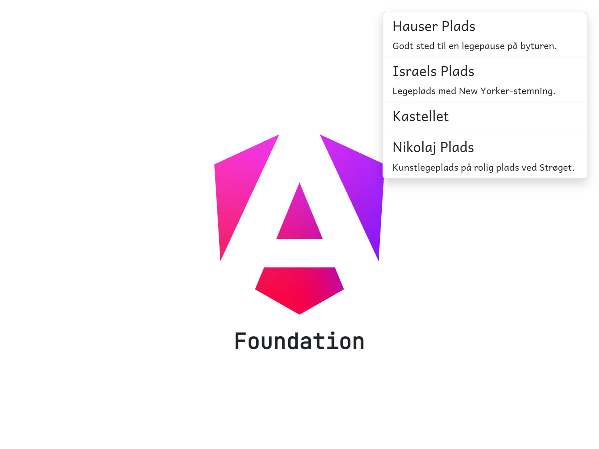

Right now, we have a model, we have some mock data and we have a sidebar component. But the sidebar component is still static😒
Assign the MOCK_PLAYGROUNDS to an instance variable called playgrounds in the sidebar component.
Next update the template to iterate over these playgrounds using @for. Use one of the <li> elements as a template on how to render the playgrounds. Remove the other <li> element.
